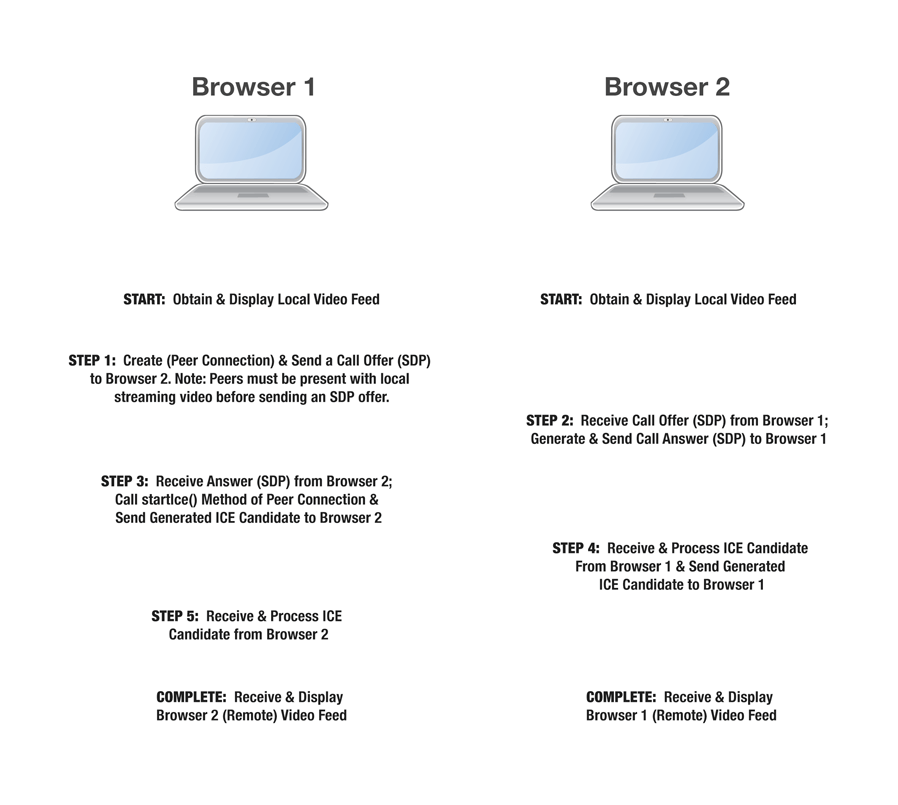

The WebRTC API is designed to allow JavaScript applications to create real-time connections containing audio and video streams as well as data channels for arbitrary data. These connections are created to directly link two users' browsers, without necessarily requiring any intermediary servers which support the WebRTC protocols. WebRTC also leverages the {{domxref("MediaDevices.getUserMedia", "getUserMedia()")}} method to get access to microphone and camera data. In this article, we'll take a look at how peer-to-peer connections are created and managed using WebRTC and its {{domxref("RTCPeerConnection")}} interface.
A high-level description of what happens in an RTCPeerConnection was shown in an Hacks article (see all WebRTC Hacks articles here):

RTCPeerConnection was shown in the Mozilla Hacks blog article Embedding WebRTC video chat.| Specification | Status | Comment |
|---|---|---|
| {{SpecName("Media Capture")}} | {{Spec2("Media Capture")}} | Definition of the getUserMedia API |
| {{SpecName("WebRTC 1.0")}} | {{Spec2("WebRTC 1.0")}} | Initial definition |